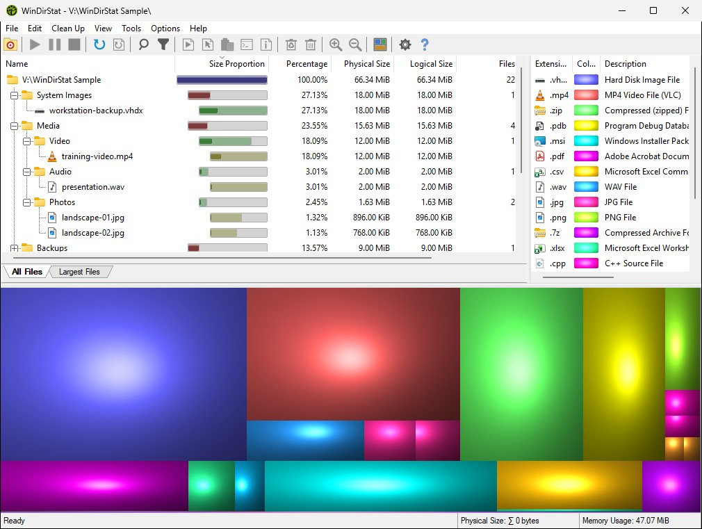

WinDirStat is a free, open-source disk usage analyzer and cleanup assistant for Microsoft Windows. See what fills your drives and folders, then investigate the files that matter.
Choose drives or folders in Select Drives. Enable duplicate scanning only when needed.
Sort by size, inspect Largest Files, or press Ctrl+F to search. Select an item to locate it in the visualization.
Review items in Explorer before cleanup, then refresh the affected results.
Adjust layouts, fonts, dark mode, and portable settings in Settings. Source code and issue reports are on GitHub.

The screenshot follows your system theme. In the treemap, each rectangle represents a file. Area shows size, color shows file type, and nesting shows the folder structure.
WinDirStat is free, open-source software distributed under the GNU GPL v3 or later.